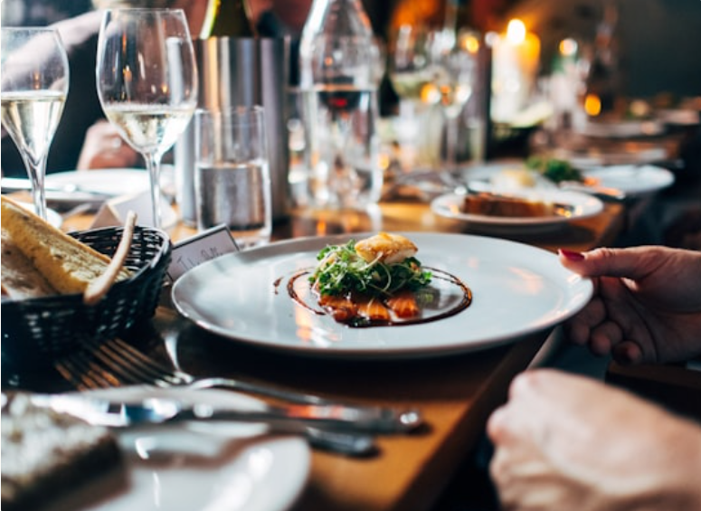
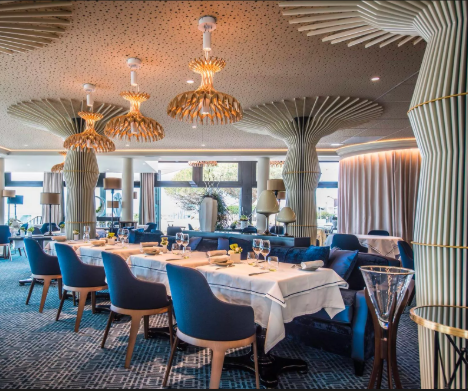

Notre histoire
Une Cuisine authentique au coeur de Ouaga 2000
Depuis 2013
NewDelice est née d'un rêve simple : offir aux habitants de la ville une expérience culinaire raffinée, ancrée dans les saveurs africaines et ouverte sur le monde. Fondé par la famille Sawadogo, le restaurant a ouvert ses portes en 2013 dans l'un des quartiers les plus prisés de Ouagadougou.
Dès la première année, NewDelice s'est imposé comme une adresse incourtournable gràce à sa cuisine généreuse, ses produits frais sourcés localement et son accueil chaleureux qui fait la fierté de toute l'équipe.

A la tête des cuisines
Formé entre France et Dakar, Chef Francis reviendra au Burkina Faso avec une vision claire : sublimer la cuisine africaine avec des tecniques modernes sans jamais trahir son authenticité.
Avec plus de13 ans d'expérience, il compose chaque jour une carte qui célèbre les épices u terror burkinabé.
Ce qui nous guide
Ou nous trouver
Niché dans le quartier chic s'ouaga 2000, NewDelice bénéficie d'un cadre verdoyant et calme, idéal pour un déjeuner d'affaires ou un dîner en famille.
